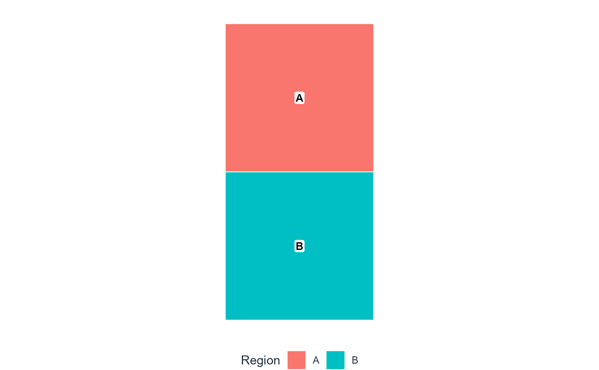

Takes the offset CSVs you downloaded from drag_map_prototype() and
produces a ggplot2 image with regions and labels in the positions you
dragged them to. If you used Spatial Studio, use
render_dragmapr_project() instead - it reads everything from the project
ZIP in one call.
Usage
render_dragged_map(
x,
region_offsets = NULL,
region_col,
label_col = region_col,
label_offsets = NULL,
state = NULL,
labels = NULL,
label_values = NULL,
max_labels = Inf,
label_prefer = NULL,
region_palette = NULL,
region_labels = NULL,
show_legend = TRUE,
max_legend_keys = 25L,
legend_position = c("bottom", "top", "left", "right", "none"),
legend_title = "Region",
legend_values = NULL,
title = NULL,
label_size = 3.4,
show_label_marker = TRUE,
label_marker_shape = c("circle", "rect", "none"),
marker_size = 3.2,
marker_fill = "white",
marker_color = "black",
marker_stroke = 0.8,
box_label_size = 3,
box_fill = "white",
box_color = "black",
box_wrap = 24,
connector_color = "#334155",
connector_linewidth = 0.35,
connector_linetype = "solid",
connector_endpoint = c("none", "arrow"),
connector_curvature = 0.18,
connector_squiggle_amplitude = 12000,
connector_squiggle_waves = 4,
connector_end_gap = NULL,
show_origin_outlines = FALSE,
show_movement_connectors = FALSE,
show_movement_band = FALSE,
movement_connector_color = "#64748b",
movement_connector_opacity = 0.72,
movement_connector_linewidth = 0.45,
movement_connector_linetype = c("solid", "dashed", "dotted"),
movement_connector_endpoint = c("closed", "open", "none"),
label_padding = 0.08,
map_background = c("white", "transparent", "light_grid", "dark"),
file = NULL,
width = 8,
height = 6,
dpi = 300
)Arguments
- x
An
sfobject in a projected CRS.- region_offsets
Region offsets as a data frame, CSV path, or
NULL.- region_col
Column defining draggable groups.
- label_col
Column used for default region-label text. Defaults to
region_col.- label_offsets
Label state as a data frame, CSV path, or
NULL.- state
Optional
dragmapr_state. When supplied, its region and label offsets seed the static render. Explicitregion_offsetsorlabel_offsetsarguments override the corresponding state table.- labels
Optional label table from
make_region_labels()oras_drag_labels(). UseFALSEto omit labels from the static render.- label_values
Optional character vector of label IDs to render.
NULLrenders all labels unlessmax_labelsis finite.- max_labels
Maximum number of label IDs to render when
label_valuesisNULL. Defaults toInf, preserving the existing behavior of rendering all labels. Set to a finite value such as25to keep static exports readable.- label_prefer
Optional label IDs to prioritize when
max_labelsis finite. Useful for moved regions, expanded branches, or labels the user selected manually.- region_palette
Optional named vector of fill colors keyed by region.
- region_labels
Optional named vector of legend labels keyed by region.
- show_legend
Show the region fill legend. When the number of distinct regions exceeds
max_legend_keys, the legend is suppressed regardless of this setting (with an informational message).- max_legend_keys
Maximum number of legend keys before the legend is automatically hidden. Defaults to
25. SetInfto always show.- legend_position
Position of the fill legend in static exports. One of
"bottom","top","left","right", or"none".- legend_title
Title shown above the fill legend. Defaults to
"Region".- legend_values
Optional character vector of region values to include in the legend.
NULLincludes all region values.- title
Optional plot title.
- label_size
Text size passed to
ggplot2::geom_text(). Defaults to3.4.- show_label_marker
Draw markers behind ordinary text labels. Use
FALSEfor text-only labels.- label_marker_shape
Marker shape for ordinary text labels in static exports. One of
"circle","rect", or"none". Ifshow_label_marker = FALSE, this is treated as"none".- marker_size
Point size passed to
ggplot2::geom_point(). Defaults to3.2.- marker_fill
Fill colour of the label marker circle. Defaults to
"white".- marker_color
Stroke colour of the label marker circle. Defaults to
"black".- marker_stroke
Stroke width of the label marker circle. Defaults to
0.8.- box_label_size
Text size for annotation boxes. Defaults to
3.- box_fill, box_color
Fill and border colours for annotation boxes.
- box_wrap
Approximate character width used to wrap annotation-box text.
- connector_color, connector_linewidth, connector_linetype
Static export styling for label connector lines.
- connector_endpoint
Connector endpoint style. One of
"none"or"arrow".- connector_curvature
Curvature used by
"curve"connectors.- connector_squiggle_amplitude, connector_squiggle_waves
Appearance of
"squiggle"connectors in static exports.connector_squiggle_amplitudeis in the same coordinate units as the projected CRS. For common metre-based CRSs such as EPSG:3857, the value is metres; for degree-based or custom projected CRSs, use that CRS's units. The default of12000is tuned for country-scale metre-based datasets; scale it up or down to match your data extent.- connector_end_gap
Distance, in plot units, to trim connector endpoints away from label centers. Defaults to an automatic value based on plot size.
- show_origin_outlines
Show the original, unshifted outlines of regions with non-zero offsets beneath the moved regions.
- show_movement_connectors
Draw a connector from each moved region's original representative point to its translated location.
- show_movement_band
Draw a swept shadow between each region's original footprint and its translated position. The shadow is built from the actual polygon boundary, so it follows the shape of the region rather than a flat bounding-box band.
- movement_connector_color, movement_connector_opacity, movement_connector_linewidth
Static export styling for movement connectors and the swept movement shadow.
- movement_connector_linetype
Movement connector line style. One of
"solid","dashed", or"dotted".- movement_connector_endpoint
Movement connector endpoint. One of
"none","open", or"closed".- label_padding
Proportional padding added around displaced labels and connectors to avoid clipping static exports.
- map_background
Static map background. One of
"white","transparent","light_grid", or"dark".- file
Optional output image path. When supplied,
ggplot2::ggsave()saves the plot.- width, height, dpi
Output settings used when
fileis supplied.
See also
drag_map_prototype() for the interactive draggable browser helper
that produces the offset CSVs; read_offsets() and read_label_state()
to load saved offsets from disk; as_drag_annotations() for info-box labels.
Examples
# render_dragged_map() is an optional static-export step.
# The primary workflow is drag_map_prototype(open = interactive()): open the
# interactive HTML, drag regions and labels to your liking, then
# copy or download the offset CSVs. Only call render_dragged_map()
# if you also need a reproducible ggplot2 image from those offsets.
if(interactive()){
# Step 1 (always): open the interactive draggable plot.
drag_map_prototype(poly, region_col = "region", open = interactive())
# Step 2 (optional): after dragging, reconstruct as a static image.
region_offsets <- read_offsets("my_region_offsets.csv")
render_dragged_map(poly, region_col = "region",
region_offsets = region_offsets)
}
# Minimal runnable example (no prior dragging session needed).
poly <- sf::st_sf(
region = c("A", "B"),
geometry = sf::st_sfc(
sf::st_polygon(list(rbind(c(0,1e5),c(1e5,1e5),c(1e5,2e5),c(0,2e5),c(0,1e5)))),
sf::st_polygon(list(rbind(c(0,0),c(1e5,0),c(1e5,1e5),c(0,1e5),c(0,0)))),
crs = 3857
)
)
render_dragged_map(poly, region_col = "region")
